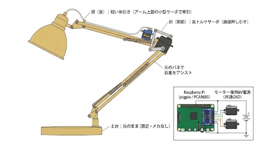

トライデントコンピュータ専門学校 卒業制作（4人チーム）／担当：PC側の映像認識プログラムと通信
ピクサーのランプ「ルクソーJr.」のように動くデスクランプを題材にした卒業制作です。PCのカメラで人の表情・ジェスチャー・周囲の物体を認識し、その結果に応じて実物のランプが首を振ったり、うなずいたり、LEDの色を変えたりします。私はプログラム班として、PC側の認識処理と、ランプへ指示を送る通信部分を担当しました。
| 要素 | 内容 |
|---|---|
| PC側（担当） | Python。OpenCVでカメラ映像を取得し、MediaPipeで表情・ジェスチャー、YOLOで物体を検出。動作とLED色を決め、UDPで送信 |
| 通信 | UDP（ポート5005）。「PAN:90,ARM:124,HEAD:15,RGB:0,0,0」形式の文字列を毎フレーム送信 |
| ランプ側（実機班） | Raspberry Pi Pico W（MicroPython）。サーボ3軸（土台・腕・頭）とNeoPixel LED 8個を制御 |

PC側の開発・検証は完了しています（送信プログラム、認識トリガー全種、手動動作、実機接続手順書）。残るは実機ランプとの最終連携確認で、実機側の組み立て完了後に実施する予定です。